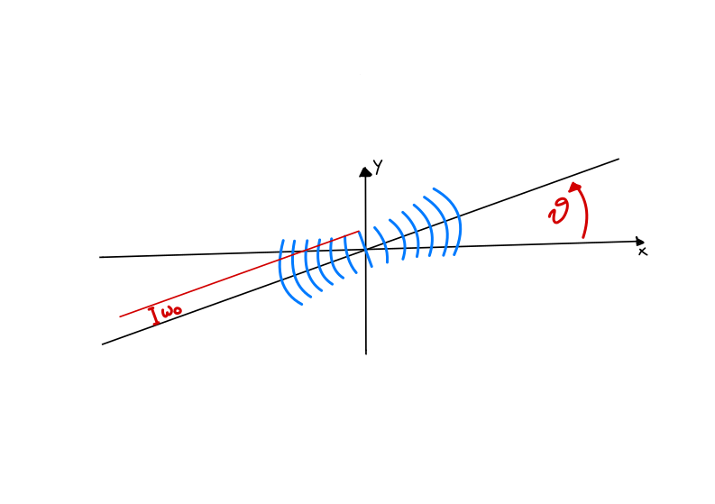

Potentials#
Potentials describe the experimental apparatus to be simulated. The common behavior of any potential is defined in the Potential class, from which both LinearPotential and NonLinearPotential inherit. Distinguishing between linear and non-linear potentials allows to separate the computation of the linear and non-linear parts of the Hamiltonian, which are computed separately in the propagation. This allows to optimize the computation of the linear part, which does not change during the evolution.
Linear potentials must implement the get_potential() method, which takes the coordinates of the grid (X and Y for a 2D grid) and an optional parameter time, and returns the linear potential evaluated on the grid. For time independent potentials, the function is called with time=None and time should be ignored by the potential.
Similarly, non-linear potentials implement the potential_function() function. This takes the same parameters as get_potential(), with the addition of the wave function psi. The function returns the non-linear potential evaluated on the grid.
Both kinds of potentials can be provided with additional parameters when instantiated. In addition, TorchGPE will provide them with an instance of the Gas class when the simulation starts, via the method set_gas(). This allows the potential to access the gas parameters, such as the number of particles, the mass, etc. After the gas is set and before the propagation is run, the function on_propagation_begin() is called on the potential. This allows the potential to perform any further initialization using the properties contained in the gas.
Note that some potentials support time dependent parameters. These can be provided by passing them a function of time instead of a constant value. For example, while Trap(omegax=100, omegay=100) creates a trap with constant frequencies,
1Trap(omegax=lambda t: 100+np.sin(t), omegay=lambda t: 100+np.cos(t))
creates a trap whose frequencies oscillate in time.
Some common time dependencies are implemented already for convenience: linear_ramp(), s_ramp() and quench() implement a linear ramp, a smooth one, and a quench experiment, respectively.
For example, if the potential ExamplePotential supports a time dependent parameter strength, the sweep of the parameter from 0 to 1 in \(1\, ms\) can be achieved with
1potential = ExamplePotential(strength=linear_ramp(0, 1, 1e-3))
Note
If a constant value is passed to a time dependent parameter, it will be converted to a function that returns the same value for any time. In other words, the following two lines are equivalent
1potential = ExamplePotential(strength=1)
2potential = ExamplePotential(strength=lambda t: 1)
Note
As TorchGPE works with adimensionalized units, the potentials should be implemented in such a way that the returned values are also adimensional.
Implemented potentials#
Here, we want to provide an overview of the implemented potentials. Please, refer to the API documentation and the advanced usage section for more details on the structure of the potentials and how to implement custom ones.
Linear potentials#
Zero#
The Zero potential is the default one. It is a linear potential that returns zero for any position and time. Because of this, it is not necessary to provide any parameter to instantiate it.
Trap#
Trap implements an harmonic trap potential. When initialized, it takes the parameters omegax and omegay, which are the frequencies in \(Hz\) of the trap in the x and y directions, respectively. Note that both the frequencies are time dependent parameters, and hence they can be both constants or functions of time.
The returned potential is
where \(x\) and \(y\) are the adimensionalized coordinates, \(\omega_x\) and \(\omega_y\) are the provided frequencies (in SI units) and \(\omega_l\) is the adimensionalisation pulse.
SquareBox#
SquareBox implements a square box potential centered at the origin. When initialized, it takes the parameters V and D, which are the depth and size of the box, respectively. Similarly to the Trap case, both the parameters are passed in SI units, and adimensionalized by the potential itself.
The returned potential is
where \(l\) is the adimensionalisation length.
RoundBox#
RoundBox implements a round box potential centered at the origin. When initialized, it takes the parameters V and D, which are the depth and diameter of the box, respectively. Similarly to the Trap case, both the parameters are passed in SI units, and adimensionalized by the potential itself.
The returned potential is
Lattice#
Lattice implements the lattice potential produced by a gaussian beam. When initialized, it takes the parameters:
V0(the lattice depth),lam(the wave length),theta(the angle with respect to the horizontal),phi(the phase of the beam),w0(the waist of the gaussian beam).
Note that V0 should be provided in units of the recoil energy \(E_r = \hbar^2 k^2 / 2m\), where \(k = 2 \pi / \lambda\) is the wave number of the lattice. The other parameters are passed in SI units, and adimensionalized by the potential itself.
Both V0 and phi are time dependent parameters, and hence they can be both constants or functions of time. By default, the waist w0 is set to infinity, which corresponds to a plane wave.
When the waist is set to be different than infinity, the returned potential also accounts for the wavefront curvature and the Gouy phase.
{kind=link}
In its simplest form (that is, when theta = 0 and w0 = np.Inf ), the returned potential is:
where \(E_{rec} = \hbar^2 k^2 / 2m\) is the recoil energy, \(l\) is the adimensionalisation length and \(\lambda\) and \(\phi\) the parameters lam and phi respectively.
See also
The Wikipedia page on the gaussan beam provides details on how is the potential changed when the waist is finite.
Non-linear potentials#
Contact#
Contact implements the contact interaction potential. When initialized, it takes the parameters a_s and a_orth, which are the scattering length and a renormalization factor for the transverse direction, respectively. The scattering length a_s is expressed in units of the Bohr radius \(a_B\).
The returned potential is
where \(N\) is the number of particles and \(a_\perp\) is the renormalization factor a_orth.
Note that the interaction strength for a 3D system, which reads \(g_{3D} = 4 \pi \hbar^2 a_s a_B / m\), is now divided by a factor \(\sqrt{2\pi}a_\perp\) to account for the missing third dimension. The orthogonal scattering length \(a_\perp\) satisfies the equation \(a_\perp^2 = a_{ho}^2 \sqrt{1+2 a_s N \left\|\psi\right\|^2}\), where \(a_{ho}\) is the length scale of the harmonic oscillator generating the confinment in the \(z\) direction. For weakly interacting systems, \(a_\perp^2 \approx a_{ho}\).
See also
Reference for the dimensionality reduction procedure:
Salasnich, L., Parola, A., Reatto, L., 2002. Effective wave equations for the dynamics of cigar-shaped and disk-shaped Bose condensates. Phys. Rev. A 65, 043614. https://doi.org/10.1103/PhysRevA.65.043614
DispersiveCavity#
DispersiveCavity describes the dispersive interaction of the BEC with a transversally driven cavity mode. When initialized, it takes the parameters:
lattice_depth(the strength of the pump. Supports time-dependent parameters),atomic_detuning(the detuning of the atoms with respect to the pump),cavity_detuning(the detuning of the cavity with respect to the pump. Supports time-dependent parameters),cavity_decay(the decay rate of the cavity),cavity_coupling(the coupling constant between the gas and the cavity),cavity_angle(the angle of the cavity with respect to the horizontal),pump_angle(the angle of the pump with respect to the horizontal),waist(the waist of the gaussian pump beam).cavity_probe(the on-axis probe field. Supports time-dependent parameters).
Note that the lattice depth is expressed in units of the recoil energy \(E_r = \hbar^2 k^2 / 2m\), where the wave number \(k\) is computed from the \(d_2\) pulse of the atomic species the gas is made of, and the specified atomic detuning.
Additionally, observe that atomic_detuning, cavity_detuning and cavity_decay have to be considered frequencies. The corresponding rates are obtained by the potential itself, by multiplying them by \(2 \pi\).
waist is the waist of the gaussian pump beam. It defaults to infinity, which corresponds to a plane wave. Note that differently from the Lattice potential, the DispersiveCavity potential does not account for the wavefront curvature and the Gouy phase.
Finally, an additional on-axis probe field can be added to the potential via the cavity_probe. This is useful to study the response of the system to a perturbation. A pre-defined probe field is defined in probe_pulse()
{kind=link}
The returned potential is made of three terms: the pump lattice, the cavity lattice and the pump-cavity interference.
In their simplest form (that is, when cavity_angle = 0, pump_angle = np.pi and waist = np.Inf ), they read:
The total potential is then the sum of the three terms.
In the expressions above, we have defined the following quantities:
\(\Delta_A\) is the pulse associated to the specified atomic detuning,
\(E_{rec}\) is the recoil energy,
\(V_0\) is the lattice depth in units of the recoil energy,
\(k\) is the wave number of the pump lattice,
\(g_0\) is the coupling strength between the gas and the cavity,
\(\alpha\) is cavity field.